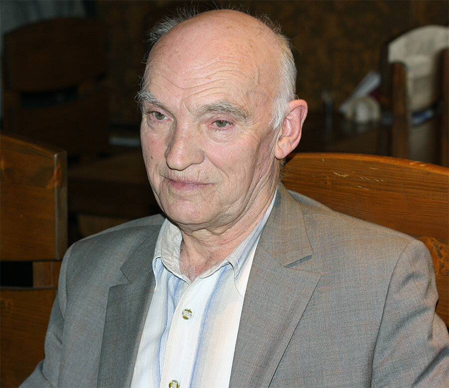
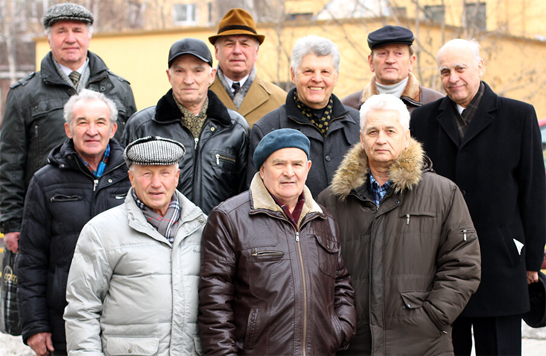

 <div style="text-align:left"><span style="font-size: medium;">В апреле 1970 года погибла атомная подводная лодка К-8. Историю ее гибели я описал <a href="http://galea-galley.livejournal.com/17675.html" target="_blank" target="_blank">ранее</a>. На днях эта история вновь ожила в рассказе моего однокашника по училищу и свидетеля той давней трагедии Геннадия Симакова. Он был командиром отсека на К-8:<br/>&#34;В девятом отсеке подводникам, что называется, повезло. У них оказался грамотный командир. Старший отсека капитан-лейтенант Г. Симаков сумел сохранить всех людей, несмотря на то, что аппаратов ИДА на всех не хватало: 6 аппаратов на 19 человек! Приходилось включаться в них поочередно. И отсек свой подводники покинули организованно, без потерь.&#34;<br/>Мы встретились, бывшие моряки-североморцы, в связи с вручением какого-то очередного памятного знака. Их теперь много клепают. Но благодаря им происходят наши встречи, редкие, но происходят. Под катом фото тех, кто смог прийти на эту встречу. А ниже - фотография Геннадия. Он перенес несколько тяжелых болезней и главное, в чем он нуждается - это пожелание здоровья.<br/><div style="text-align:center"></div><br/><a name="cutid1"></a><br/><div style="text-align:center"></div></span></div> 